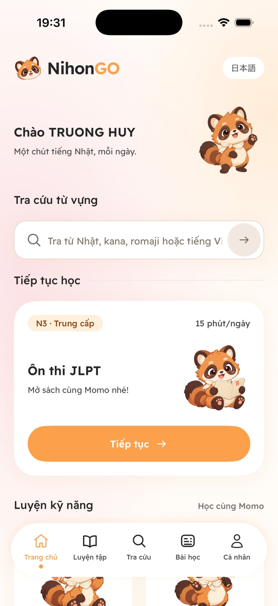
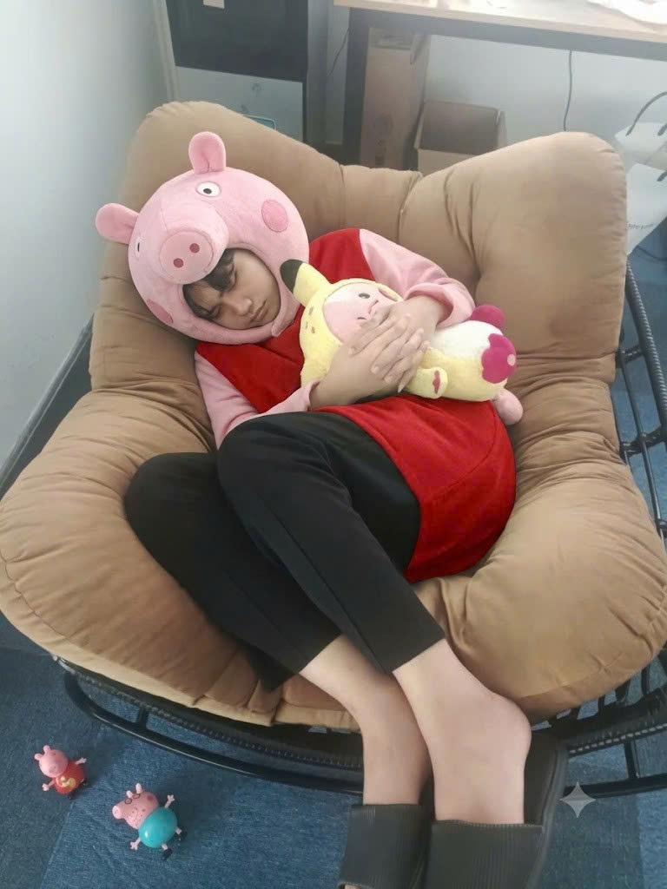

Khó ghi nhớ
từ vựng và ngữ pháp
Học xong dễ quên, không có ngữ cảnh sử dụng và khó áp dụng vào giao tiếp thực tế.
Ứng dụng hỗ trợ bạn phát triển toàn diện 4 kỹ năng tiếng Nhật với AI, video thực tế và lộ trình học cá nhân hóa.

BẠN CÓ TỪNG...
Học xong dễ quên, không có ngữ cảnh sử dụng và khó áp dụng vào giao tiếp thực tế.
Ít cơ hội luyện nghe, phản xạ nói với người bản xứ và không có ai chỉnh lỗi phát âm.
Không có lộ trình rõ ràng, bài giảng nhàm chán khiến bạn nhanh cảm thấy nản và bỏ cuộc.
MEET YOUR LEARNING PARTNER
LEARN EVERY DAY
Học tiếng Nhật một cách tự nhiên, hiệu quả và bền vững.
Làm quen với âm thanh và cách diễn đạt tự nhiên.
Luyện diễn đạt và tự tin giao tiếp hơn.
Hiểu ý nghĩa, từ vựng và cấu trúc câu.
Thực hành tạo câu và sử dụng kiến thức chủ động.
HOW IT WORKS
Một trải nghiệm học tập được thiết kế để giúp bạn chuyển từ tiếp thu kiến thức sang chủ động sử dụng tiếng Nhật.
Khám phá bản demo →Chọn nội dung và kỹ năng bạn muốn luyện tập.
Kết nối từ vựng, ngữ pháp với ví dụ thực tế.
Luyện tập và nhận hỗ trợ trong quá trình học.
Giữ nhịp học đều đặn và quay lại kiến thức đã học.
HỌC TRONG NGỮ CẢNH THỰC TẾ
Luyện nghe phản xạ với hội thoại đời sống, video và nội dung tiếng Nhật gần gũi.
Hội thoại tại cửa hàng tiện lợi (Combini), tin tức dễ hiểu và các tình huống giao tiếp hằng ngày.
Hội thoại tại cửa hàng tiện lợi
Sử dụng giọng tiếng Nhật có sẵn trên trình duyệt của bạn.
TRẢI NGHIỆM TRỰC TIẾP
Câu hỏi thực tế N5 — chọn câu chào buổi sáng lịch sự chuẩn nhất trong tiếng Nhật:
Chọn một đáp án để kiểm tra nhé!
ĐÁNH GIÁ TỪ CỘNG ĐỒNG
Lắng nghe những câu chuyện học tiếng Nhật cùng Momo.
Trước đây mình rất sợ phần Nghe và Nói vì không có người luyện tập cùng. Từ ngày học với NihonGO, linh vật Momo dễ thương luôn đồng hành nhắc nhở.
Video ngữ cảnh thực tế của NihonGO khác biệt hoàn toàn với các app sách vở truyền thống. Bạn học được những câu người Nhật thường nói ở văn phòng và đời sống.
Giao diện ứng dụng trực quan! Mỗi ngày chỉ cần 15 phút rảnh rỗi trên xe bus là mình đã học xong mục tiêu mà không cảm thấy áp lực.

Lưu ý: các đánh giá và kết quả học tập cần được xác minh và có sự đồng ý của người được trích dẫn trước khi công bố chính thức.
ĐẦU TƯ THÔNG MINH
Học thử miễn phí ngay hôm nay. Chọn gói phù hợp với hành trình của bạn.
Dành cho người mới bắt đầu làm quen với bảng chữ cái Hiragana & Katakana.
Gói phổ biến dành cho người muốn phát triển toàn diện 4 kỹ năng.
Giá tham khảo — ưu đãi 45% cần xác nhận
Đầu tư một lần cho hành trình chinh phục tiếng Nhật.
Các mức giá và quyền lợi trên được đưa vào theo nội dung tham khảo bạn cung cấp; cần xác nhận chính sách bán hàng, tính năng đã triển khai và điều khoản hoàn tiền trước khi công bố.
GIẢI ĐÁP THẮC MẮC
Mọi điều bạn cần biết trước khi bắt đầu hành trình học tiếng Nhật cùng Momo.
NihonGO hướng đến người mới bắt đầu với bảng chữ cái Hiragana, Katakana và lộ trình học từ nền tảng. Hãy kiểm tra các bài học hiện có trong bản demo để biết phần nào đã sẵn sàng trải nghiệm.
Định hướng của NihonGO là hỗ trợ người học thực hành nói và nhận phản hồi. Phạm vi phân tích phát âm, cao độ và giới hạn lượt dùng cần được mô tả theo chức năng thực tế của phiên bản đang triển khai.
Khả năng học ngoại tuyến phụ thuộc vào phiên bản ứng dụng và gói sử dụng. Vui lòng xác nhận tính năng này đã được triển khai trước khi đăng thông tin chính thức.
Chính sách hoàn tiền cần được công bố rõ về điều kiện, thời hạn và quy trình yêu cầu. Không nên coi nội dung hoàn tiền 7 ngày là cam kết chính thức cho đến khi đội ngũ xác nhận chính sách.
NihonGO tập trung vào bốn kỹ năng Nghe (聞く), Nói (話す), Đọc (読む) và Viết (書く), kết hợp thực hành theo ngữ cảnh và lộ trình học.
Nhấn nút “Trải nghiệm ngay” để mở bản demo sau khi URL website thật được cấu hình trong mã nguồn.
ĐỒNG HÀNH CÙNG BẠN MỖI NGÀY
Chỉ 15 phút mỗi ngày — bắt đầu từ một bước nhỏ và tiếp tục tiến bộ.